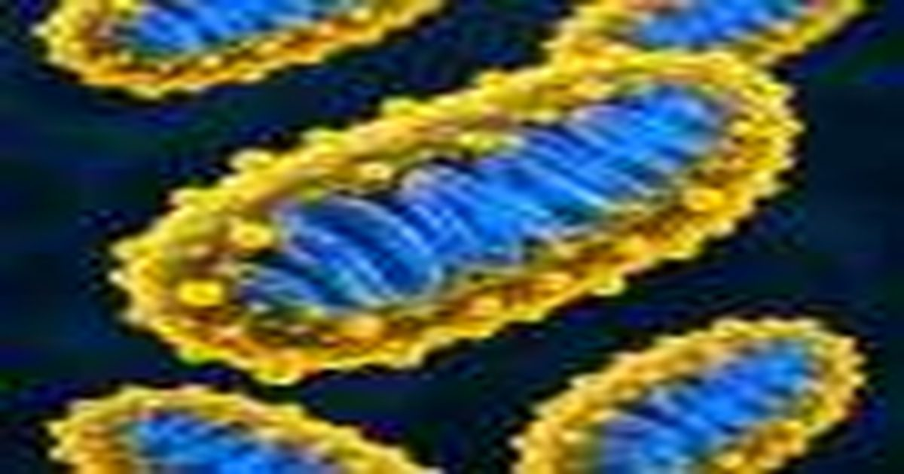

Инженерное покрытие позволяет митохондриям сохранять способность вырабатывать энергию
Исследователи покрыли митохондрии инновационными материалами без ущерба для их функции, согласно исследованию IRCCS Fondazione Istituto Neurologico Carlo Besta (FINCB) и Politecnico di Milano.
Исследование проводилось в рамках совместной лаборатории BraiNs, открытой в 2023 году.